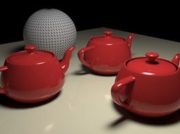
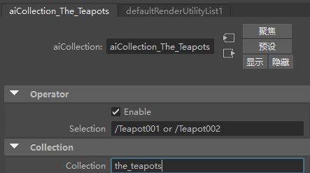
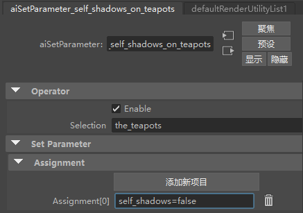
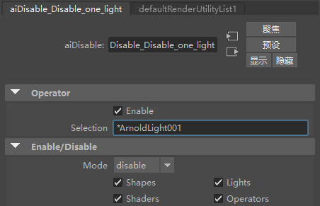
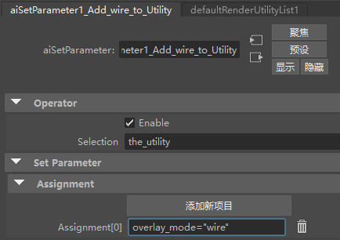
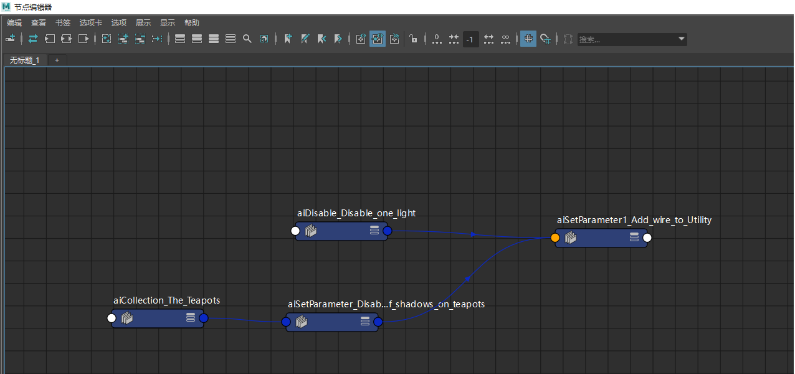

本简短教程介绍如何使用 set_parameter、collection 和 disable 运算符来更改一些茶壶的灯光和自身阴影以及球体的着色。在场景中，两个灯光将阴影投射在三个茶壶和一个球体上，其中将一个简单的工具着色器指定给球体。
使用“诊断 > 功能覆盖”(Diagnostics > Feature Overrides)中的“忽略运算符”(Ignore Operators)标志，以检查在没有任何运算符时渲染效果如何。
要下载对应的场景文件，请单击此处。
有关如何创建运算符以及在何处创建运算符的信息，请单击此处。
我们将使用“集合”(Collection)运算符来引用选择。这可用于避免多次编写选择（在本例中可选）。
Teapot001Shape or Teapot002Shape

茶壶集合
self_shadows=false

可以使用“禁用”(Disable)运算符禁用其中一个灯光。

禁用 ArnoldLight001
现在，我们将更改球体工具着色器的 overlay_mode。
overlay_mode="wire"

使用“设置参数”(Set Parameter)更改工具着色器

最终运算符图表窗口设置